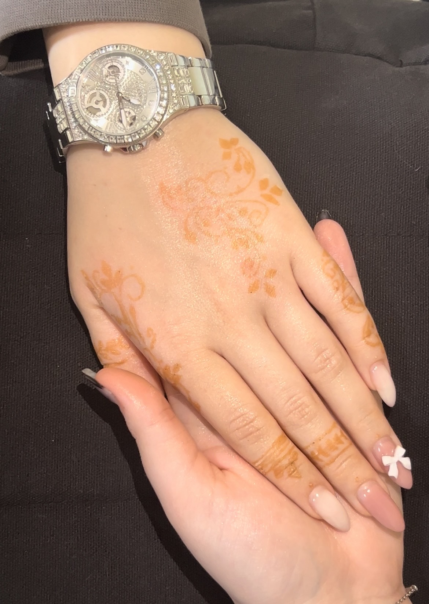

- Подготовка – Кожата трябва да бъде чиста и суха.
- Нанасяне – Къната се рисува с конус или шаблон и се оставя да изсъхне за няколко часа.
- Грижа – След премахване на пастата зоната не се мокри 24 часа, за да се запази цветът по-дълго.
Как се прави татуировка с къна?
Татуировките с къна са временни рисунки върху кожата, направени с натурална паста. Те издържат около 1-3 седмици и са безболезнени.
Стилове Къна:
Индийски стил
Сложни флорални и пейсли мотиви, често покриващи цели ръце и крака.
Арабски стил
По-големи, смели шарки с открити пространства.
Африкански стил
Геометрични и плетени шарки.

Минималистичен стил
Модерни, семпли и елегантни дизайни.
Стадии на правене на къна:
Първи стадий - Рисуване
Втори стадий - Нанасяне

Трети стадий - Финален резултат
Най-често задавани въпроси:
Колко време издържа къната?
Обикновено къната трае между 7 и 14 дни, в зависимост от типа кожа, мястото на тялото и грижата след нанасяне.
Безопасно ли е рисуването с къна?
Натуралната къна е напълно безопасна и хипоалергенна. Важно е да се избягва „черната къна“, която може да съдържа химикали, причиняващи алергични реакции.
Как да направя така, че къната да издържи по-дълго?
• Оставете къната върху кожата поне 4-6 часа преди да я изтриете.
• Избягвайте контакт с вода през първите 24 часа.
• Намазвайте дизайна с натурални масла, като кокосово или бадемово, за да го запазите по-дълго.
Какъв цвят ще стане къната върху кожата?
Първоначално оранжева, къната потъмнява в следващите 24-48 часа, достигайки наситен кафяв или тъмночервен оттенък.
Може ли къната да се премахне по-рано?
Тъй като къната прониква в горния слой на кожата, тя избледнява естествено. Ако искате да ускорите процеса, можете да ексфолирате с лимонов сок, захар или солена вода.